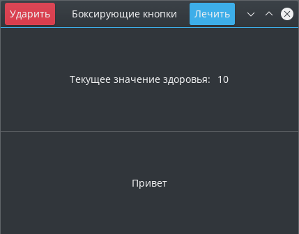

Gtk-Rust на примерах
Gtk-Rust by Example (GRBE) представляет собой неофициальную книгу по разработке GTK GUI, на языке программирования Rust, которая будет демонстрировать практическое использование библиотеки GTK на различных примерах.
Перед тем как начать, укажите версию библиотеки в вашем Cargo.toml файле:
[dependencies.gtk]
version = "0.3.0"
features = ["v3_22"]
Окно с панелью заголовка

Исходный код программы для этой главы можно найти здесь.
В этой главе мы создадим простое GTK приложение с панелью заголовка. Этот пример познакомит Вас с основами создания структуры приложения, которое будет содержать виджет и окно с заголовком.
Создание структуры приложения
Следующая диаграмма показывает, как мы будет проектировать структуру для нашего GTK приложения. Можно и не следовать этой диаграмме для достижения главного результата, однако, проектирование структуры пользовательского интерфейса может быть полезной пищей для ума.

В примере ниже, мы создадим структуру с GtkWindow и Header:
# #![allow(unused_variables)] #fn main() { extern crate gtk; use gtk::*; // Объявим структуру `Application`. pub struct Application { pub window: Window, pub header: Header, } #}
Header - это еще одна структура, которая будет содержать GtkHeaderbar и все виджеты внутри этой панели заголовка.
# #![allow(unused_variables)] #fn main() { // Объявим структуру `Header`. pub struct Header { pub container: HeaderBar, } #}
Создание пользовательского интерфейса (UI)
Далее, мы создадим интерфейс с помощью Rust и расположим его в "ново-объявленных" структурах.
Во-первых, структура нашего приложения будет содержать в себе все другие структуры нашего пользовательского интерфейса. В примере ниже находится код с комментариями, описывающие каждый метод, который мы будем использовать для конфигурации.
Мы создадим GtkWindow и "присоединим" каждый элемент UI. Структура Header будет распологать в себе другие GtkHeaderBar. Далее, напишем функцию для выхода из приложения.
Важно также установить описание для окна и wmclass, который будет отображаться оконными менеджерами, а с помощью функции Window::set_default_icon_name() настроим отображаемую иконку.
# #![allow(unused_variables)] #fn main() { // Блок реализации. impl Application { fn new() -> Application { // Создадим новое окно с типом `Toplevel`. let window = Window::new(WindowType::Toplevel); // Создадим панель заголовка и связанный с ним контент. let header = Header::new(); // Укажем название заголовка виджета. window.set_titlebar(&header.container); // Укажем название для окна приложения. window.set_title("Простая программа"); // Установим класс для оконного менеджера. window.set_wmclass("simple-gtk", "Простая программа"); // Установим иконку, отображаемую приложением. Window::set_default_icon_name("имя_иконки"); // Программа закроется, если нажата кнопка выхода. window.connect_delete_event(move |_, _| { main_quit(); Inhibit(false) }); // Возвращаем основное состояние приложения. Application { window, header } } } #}
Здесь распологается блок реализации для структуры Header, которая на данный момент содержит только GtkHeaderBar. Важно указать описание для этой панели заголовка, чтобы она отображалась, а также сделать активными элементы управления окном, поскольку они отключены по-умолчанию.
# #![allow(unused_variables)] #fn main() { impl Header { fn new() -> Header { // Создадим виджет контейнера для главной панели заголовка. let container = HeaderBar::new(); // Установим отображаемый тект в секции для названия. container.set_title("Simple GTK"); // Делаем активными элементы управления окна в этой панели. container.set_show_close_button(true); // Возвращаем заголовок и его состояние. Header { container } } } #}
Инициализация и запуск приложения
Теперь, когда мы готовы, нам нужно просто инициализировать GTK, создать структуру приложения, показать все виджеты внутри этой структуры и запустить главный цикл событий GTK.
fn main() { // Инициализация GTK. if gtk::init().is_err() { eprintln!("Не удалось инициализировать GTK приложение."); return; } // Инициализация начального состояния UI. let app = Application::new(); // Делаем видимыми все виджеты с UI. app.window.show_all(); // Запуск основного цикла GTK. gtk::main(); }
После того, как основной поток вошёл в цикл событий, он будет взаимодействовать с каждым вызваным виджетом для действий, например: метод connect_delete_event(), который мы использовали выше, чтобы запрограммировать кнопку выхода для закрытия программы.
Результат
После того, как вы написали код, соберите и запустите программу, которая выглядит вот так:
cargo build && cargo run
Боксирующие кнопки

Исходный код программы для этой главы можно найти здесь.
В этом разделе мы рассмотрим, как структурировать Ваш UI с помощью коробок(box), изменять метку(label) и запрограммировать нажатие по кнопке. А также, к концу вы поймёте, как:
- Добавлять дочерние элементы в панель заголовка;
- Добавлять классы стилей к кнопке;
- Управлять состоянием приложения с помощью атомарных счётчиков Arc и выравнивать виджеты внутри контейнера.
Напомним, что каждый GTK объект, который можно получить из контейнера gtk - заворачивают, так что не стоит беспокоится о правилах заимствования Rust. Объекты GTK считают ссылки, поэтому, когда вам нужно передать GTK объект через несколько замыканий, вы можете сделать это с помощью клонирования новой ссылки.
Необходимые знания
Прежде чем продолжить изучение урока, убедитесь что вы понимаете что такое атомарность и атомарный счётчик ссылок (Arc). Эти понятия критически важны для возможности разделять состояние между несколькими замыканиями или потоками.
Изучить этот вопрос можно в документации модулей std::sync и std::sync::atomic. Так же, вы можете ознакомиться с безблокировочной конкурентностью (lockless concurrency) в этом документе.
Упаковки, кнопки и метки
Цель этого раздела заключается в том, чтобы дать объяснение объектам, которые будут использованы до того, как мы применим их на практике в следующих разделах.
GtkBox
GtkBox является фактически эквивалентом UI вектора в Rust и должена быть объявлена с помощью Orientation, который определяет, что должны ли элементы быть выровнены слева направо или сверху вниз. Для тех, кто имеет опыт разработки с современным дизайном HTML5/CSS3, GtkBox эквивалентен гибким упаковкам -- они могут расширяться на всё пространство, а виджеты, содержащиеся внутри, тоже могут расширяться в соответствии с правилами, применяемыми при дочерней упаковке.
Создание упаковки
В следующем примере, мы создадим горизонтальную и вертикальную упаковку с нулевым отступом между дочерними элементами, содержащимися в упаковке. После создания упаковки, вы можете задать виджеты, ипсользуя метод pack_*.
# #![allow(unused_variables)] #fn main() { let padding_between_children = 0; let horizontal_box = Box::new(Orientation::Horizontal, padding_between_children); let vertical_box = Box::new(Orientation::Vertical, padding_between_children); #}
Упаковка упаковки
Вы могли заметить, что метод pack_* принимает большое количество параметров. Первым параметром должна быть ссылка на виджет, которую вы добавляете в контейнер. Вторым и третьим параметрами объявляют параметры заполнения соответственно. Последним параметром объявляют - как много единиц пространства должно быть между дочерними элементами в упаковке.
To further elaborate on the expand and fill parameters, expand defines whether the given widget should attempt to use all of the extra space that it can. Each widget that has the expand parameter set will equally share that extra space. Meanwhile, fill defines whether the extra spaced should actually have that widget fill to cover that extra space, or should merely use that extra space as padding.
# #![allow(unused_variables)] #fn main() { health_info.pack_start(&health_label, false, false, 5); health_info.pack_start(&health, true, true, 5); #}
GtkLabel
GtkLabel - это простой виджет, который состоит исключительно из текста. Название говорит само за себя. Всё, что вам нужно запомнить - это как создать метку(label) и изменить её.
# #![allow(unused_variables)] #fn main() { let information_label = Label::new("Specific Information: "); let value = Label::new("Linux"); value.set_label("Redox"); let horizontal_box = Box::new(Orientation::Horizontal, 5); horizontal_box.pack_start(&information_label, false, false, 0); horizontal_box.pack_start(&value, true, false, 0); #}
GtkButton
Создание кнопок
GtkButton - это простая кнопка, содержащая текстовую метку(label) и/или изображения для представления действия, которое должно быть выполнено при нажатии кнопки.
# #![allow(unused_variables)] #fn main() { let text_button = Button::new_with_label("Ok"); let image_button = Button::new_from_icon_name("имя-иконки", 32); #}
Дизайн кнопок
Виджеты в GTK можно оформить так, чтобы они отличались от других виджетов в пользовательском интерфейсе(UI). В частности, кнопки поддерживают два класса стилей: destructive-action, and suggested-action. Если в вашем UI есть особенная кнопка, которая должна отличаться, вы можете установить её так:
# #![allow(unused_variables)] #fn main() { // Добавьте соответствующие классы стилей к этим кнопкам. delete_button.get_style_context().map(|c| c.add_class("destructive-action")); new_button.get_style_context().map(|c| c.add_class("suggested-action")); #}
Каждый GtkWidget предоставляет метод get_style_context(), который возвращает
Optiondestructive-action и suggested-action. Как правило, destructive action окрашивает кнопку в красный цвет, между тем, suggested action использует синий цвет. Актуальный цвет будет зависеть от того, какая тема GTK используется вами.
Сопровождение внешнего состояния
В этой главе у нас будет некоторое состояние, которым мы будем управлять с помощью UI. Поэтому нам необходим способ хранения и загрузки значения из этого состояния. Программа, которую мы хотим написать, имеет один компонент: значение здоровья.
Как оказалось, мы напрямую можем воспользоваться атомарными примитивами, таким как AtomicUsize, чтобы хранить значение для совместного использования нескольких неизменяемых замыканий. Этим атомарным значением можно управлять, не требуя изменяемого доступа к внутреннему значению. Таким образом, мы можем передавать неизменяемые ссылки на это значение и изменять его даже когда оно уже одолжено в нескольких местах одновременно.
# #![allow(unused_variables)] #fn main() { pub struct HealthComponent(AtomicUsize); #}
Пока мы здесь, можем продолжить и написать некоторую логику для этой структуры в блоке реализации, используя следующие методы для здоровья:initializing,subtracting и healing.
# #![allow(unused_variables)] #fn main() { impl HealthComponent { fn new(initial: usize) -> HealthComponent { HealthComponent(AtomicUsize::new(initial)) } fn get_health(&self) -> usize { self.0.load(Ordering::SeqCst) } fn subtract(&self, value: usize) -> usize { let current = self.0.load(Ordering::SeqCst); let new = if current < value { 0 } else { current - value }; self.0.store(new, Ordering::SeqCst); new } fn heal(&self, value: usize) -> usize { let original = self.0.fetch_add(value, Ordering::SeqCst); original + value } } #}
Создание структуры пользовательского интерфейса (UI)
Используя структуру предыдущей главы в качестве образца, мы можем расширить её, чтобы включить новые элементы UI, которые будем использовать в нашей программе. It is important to note that you only need to store elements that you are going to later program after the UI is constructed.
В этой программе мы добавим два GtkButtons к панели заголовка и воспользуемся вертикальной и горизонтальной GtkBox с некоторыми метками (labels), чтобы отобразить информацию о текущем состоянии нашего приложения. Следующее изображение является нашей новой диаграммой структур.

Что означает следующее в Rust:
# #![allow(unused_variables)] #fn main() { pub struct App { pub window: Window, pub header: Header, pub content: Content, } pub struct Header { pub container: HeaderBar, pub hit: Button, pub heal: Button, } pub struct Content { pub container: Box, pub health: Label, pub message: Label, } #}
Создание структуры App
Следуя последнему уроку, начнём с нашей структуры App. Метод new() должен принимать ссылку на &HealthComponent в качестве вводимого значения в UI, later on down the road within our Content structure. One will note that we have added a new content variable of type Context, which takes that health reference.
# #![allow(unused_variables)] #fn main() { impl App { fn new(health: &HealthComponent) -> App { // Create a new top level window. let window = Window::new(WindowType::Toplevel); // Create a the headerbar and it's associated content. let header = Header::new(); // Contains the content within the window. let content = Content::new(health); // Set the headerbar as the title bar widget. window.set_titlebar(&header.container); // Set the title of the window. window.set_title("App Name"); // Set the window manager class. window.set_wmclass("app-name", "App name"); // The icon the app will display. Window::set_default_icon_name("iconname"); // Add the content box into the window. window.add(&content.container); // Programs what to do when the exit button is used. window.connect_delete_event(move |_, _| { main_quit(); Inhibit(false) }); // Return our main application state App { window, header, content } } } #}
Создание Header
Затем мы так же реализуем метод для нашего заголовка, который должен содержать два элемента GtkButtons -- кнопка удара и лечения. Также обратите внимание, что мы устанавливаем некоторые классы стилей этим кнопкам, чтобы дать им более информативную визуальную способность.
# #![allow(unused_variables)] #fn main() { impl Header { fn new() -> Header { // Creates the main header bar container widget. let container = HeaderBar::new(); // Sets the text to display in the title section of the header bar. container.set_title("App Name"); // Enable the window controls within this headerbar. container.set_show_close_button(true); // Create the hit and heal buttons. let hit = Button::new_with_label("Hit"); let heal = Button::new_with_label("Heal"); // Add the corresponding style classes to those buttons. hit.get_style_context().map(|c| c.add_class("destructive-action")); heal.get_style_context().map(|c| c.add_class("suggested-action")); // THen add them to the header bar. container.pack_start(&hit); container.pack_end(&heal); // Returns the header and all of it's state Header { container, hit, heal } } } #}
Создание Content
Теперь пришло время создать содержимое для нашего окна. При создании своего интерфейса (UI) с древовидной диаграммой, вы почти достигните GtkBoxes. При инициализации, эта упаковка должна быть указана с Horizontal или Vertical оринтацией.
You will amost certainly reach for GtkBoxes for configuring your UI. These can be created with either a Horizontal or Vertical alignment. These boxes are where you will add all of your widgets, where they will be stacked according to the alignment of the box they are attached to.
Мы должны создать вертикальную упаковку, которая содержит два дочерних элемента: вертикальный GtkBox содержащий метку (label) и значение, а затем ниже простой GtkLabel.
# #![allow(unused_variables)] #fn main() { impl Content { fn new(health: &HealthComponent) -> Content { // Create a vertical box to store all of it's inner children vertically. let container = Box::new(Orientation::Vertical, 0); // The health info will be contained within a horizontal box within the vertical box. let health_info = Box::new(Orientation::Horizontal, 0); let health_label = Label::new("Current Health:"); let health = Label::new(health.get_health().to_string().as_str()); // Set the horizontal alignments of each of our objects. health_info.set_halign(Align::Center); health_label.set_halign(Align::Start); health.set_halign(Align::Start); // Add the health info box's children health_info.pack_start(&health_label, false, false, 5); health_info.pack_start(&health, true, true, 5); // Create a message label that will later be modified by the application, upon // performing a hit or heal action. let message = Label::new("Hello"); // Add everything to our vertical box container.pack_start(&health_info, true, false, 0); container.pack_start(&Separator::new(Orientation::Horizontal), false, false, 0); container.pack_start(&message, true, false, 0); Content { container, health, message } } } #}
Устанавливаем выравнивание
Возможно, вы заметили, что приведённый код выше устанавливает горизонтальные выравнивания.
По желанию, с помощью методов set_halign() и set_valign(), можно установить выравнивание для виджетов.
# #![allow(unused_variables)] #fn main() { // Set the horizontal alignments of each of our objects. health_info.set_halign(Align::Center); health_label.set_halign(Align::Start); health.set_halign(Align::Start); #}
Programming the UI
At this point, we can now wire everything together in the main thread. First we will set the default value (health value) for the state of the program. That value will be used to set the initial state of the GTK application structure. Then we shall program the hit and heal buttons, which shall change values in the content area of main window.
Before We Start
We are going to have some predefined strings utilized based on what action was performed, and certain conditions of the HealthComponents value. To do this, we will have a MESSAGES array that we will access via a u8-sized enum, which will be used to get indexes into the array.
# #![allow(unused_variables)] #fn main() { /// Predefined messages that will be used by the UI upon certain conditions. const MESSAGES: [&str; 3] = ["Ouch! You hit me!", "...", "Thanks!"]; #[repr(u8)] // An enum, represented as a u8, that is used as an index into the `MESSAGES` array. enum Message { Hit, Dead, Heal } #}
For those not yet versed in Rust, the #[repr(u8)] attribute defines that the following item
should be represented as a u8 value in memory. By default, enum variants start counting from
zero, so Hit is 0, whereas Heal is 2. If you want to make this explicit, you can also
write this as so:
# #![allow(unused_variables)] #fn main() { #[repr(u8)] enum Message { Hit = 0, Dead = 1, Heal = 2 } #}
Initializing the Health Component & Application Structure
After initializing GTK, we will create our health component, which will be wrapped within an atomic reference-counted pointer (Arc). If we remember from previous code, the inner value is actually an AtomicUsize, which serves as our health counter. This value will be shared among multiple closures, hence the requirement for the reference counter.
# #![allow(unused_variables)] #fn main() { let health = Arc::new(HealthComponent::new(10)); #}
Using this value, we will create our application's UI structure. Note that &health is
automatically referenced as an &HealthComponent, even though it's wrapped within an Arc.
# #![allow(unused_variables)] #fn main() { let app = App::new(&health); #}
Programming the Hit Button
From here on, all we need to is to program our widgets, and this is where we will share both our health component, and various other UI widgets across closures. Starting with the hit button, we simply need to program what will happen when that button is clicked. The ButtonExt trait provides a connect_clicked() method for precisely that.
Note that widgets in GTK typically pass themselves through their closures, so if you need to manipulate the calling widget, you can do so by using the assigned value passed through the closure. We don't require this functionality, so we shall ignore the value.
# #![allow(unused_variables)] #fn main() { widget.connect_action(move |widget| {}); #}
# #![allow(unused_variables)] #fn main() { { // Program the Hit button to subtract health. let health = health.clone(); let message = app.content.message.clone(); let info = app.content.health.clone(); app.header.hit.clone().connect_clicked(move |_| { let new_health = health.subtract(1); let action = if new_health == 0 { Message::Dead } else { Message::Hit }; message.set_label(MESSAGES[action as usize]); info.set_label(new_health.to_string().as_str()); }); } #}
In the above, we create an anonymous scope so that we can self-contain our cloned references. Each invocation of clone() will simply increment a reference counter, and enable these values to be used again at a later time.
After subtracting from the health component, if the health is now 0, we will return
Message::Dead, otherwise the message shall be MessageHit. Once we have this information,
it's just a matter of updated the labels with their new values.
Programming the Heal Button
This works almost identically, so we can effectively copy and paste the above code, and then modify it to meet our needs for this action.
# #![allow(unused_variables)] #fn main() { { // Program the Heal button to restore health. let health = health.clone(); let message = app.content.message.clone(); let info = app.content.health.clone(); app.header.heal.clone().connect_clicked(move |_| { let new_health = health.heal(5); message.set_label(MESSAGES[Message::Heal as usize]); info.set_label(new_health.to_string().as_str()); }); } #}
Altogether
After programming the UI, you can end the code by tacking on the following at the end:
# #![allow(unused_variables)] #fn main() { // Make all the widgets within the UI visible. app.window.show_all(); // Start the GTK main event loop gtk::main(); #}
And you should have your source code look as follows:
/// Predefined messages that will be used by the UI upon certain conditions. const MESSAGES: [&str; 3] = ["Ouch! You hit me!", "...", "Thanks!"]; #[repr(u8)] // An enum, used as a u8, that is used as an index into the `MESSAGES` array. enum Message { Hit, Dead, Heal } fn main() { // Initialize GTK before proceeding. if gtk::init().is_err() { eprintln!("failed to initialize GTK Application"); process::exit(1); } // Set the initial state of our health component. We use an `Arc` so that we can share // this value across multiple programmable closures. let health = Arc::new(HealthComponent::new(10)); // Initialize the UI's initial state. let app = App::new(&health); { // Program the Hit button to subtract health. let health = health.clone(); let message = app.content.message.clone(); let info = app.content.health.clone(); app.header.hit.clone().connect_clicked(move |_| { let new_health = health.subtract(1); let action = if new_health == 0 { Message::Dead } else { Message::Hit }; message.set_label(MESSAGES[action as usize]); info.set_label(new_health.to_string().as_str()); }); } { // Program the Heal button to restore health. let health = health.clone(); let message = app.content.message.clone(); let info = app.content.health.clone(); app.header.heal.clone().connect_clicked(move |_| { let new_health = health.heal(5); message.set_label(MESSAGES[Message::Heal as usize]); info.set_label(new_health.to_string().as_str()); }); } // Make all the widgets within the UI visible. app.window.show_all(); // Start the GTK main event loop gtk::main(); }